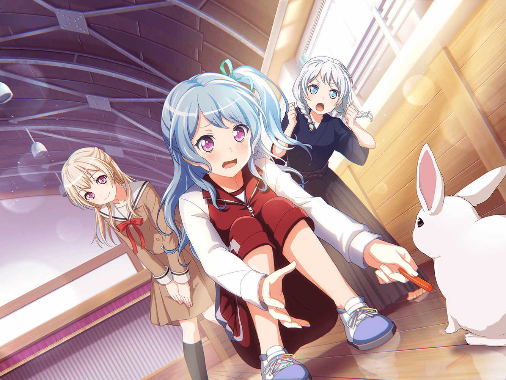

カフェテリア
イヴ
それでですね。
その時、私はこう言ったんです。
いざ、尋常に勝負！ と
千聖
そこで、その言葉が言えるのが
すごいと思うわ……
花音
そ、そうだね……
イヴ
いえ、ブシドーを重んじる私としては
当然のことなのです
千聖
イヴちゃんって、
武士道、本当に好きね
花音
ひとつの事が大好きなのは
いいと思うけど……
イヴ
ありがとうございます、カノンさん！
この作戦のお陰で相手を撃退する事ができましたし、
やはりブシドーはすごいです！
千聖
普通、撃退するものではないと思うけれど
イヴ
そうなのですか？
私はてっきり決闘かと……
花音
イヴちゃんらしいですけどね。
でも、それはスカウトって言ってですね……
イヴ
つまり、ブシドーですね！！
花音
い、いや……違いますよ？
イヴ
あっ！
作戦と言えば！
千聖
どうしたの？
イヴ
あの時のアリサさんの作戦は
ナイスでした！
花音
あの時……あ、うさぎさんを捕まえた時のことですか？
イヴ
はい！
あの作戦を思いつくとは、
アリサさんはきっと有名な軍師なのかもしれません
千聖
ふふふ、そうね
まさか最後にはたえちゃんをダシにするなんて
イヴ
ダシ！ タエさんはダシにもなれるんですね！
ダシ……日本の心……素敵です！
千聖
イヴちゃん、ちょっと違うわ
花音
あ、あはは……
花音
でも、確かに有咲ちゃんの作戦のおかげで、
うさぎさんを捕まえられたよね
花音
ただ、餌を見せても、
なかなか警戒心を解いてくれなくて大変だったけど……
花音
はぁ……なんとかうさぎさんを元に戻せてよかった……
千聖
花音？
顔が緩んでるけど、どうしたの？
イヴ
はい、緩んでます！
これは、何かいいことがあったに違いないです
花音
そ、そんなに緩んでます？
千聖
ええ、凄い緩んでるわ
花音
ちょっと、
うさぎさんに餌をあげた時の事を思い出しちゃったの
花音
お尻を振りながら
一生懸命に食べてるのが、すごくかわいくて……
イヴ
私もカノンさんの気持ち、わかります！
あの子たちはとてもキュートでした！
千聖
そうね。
とても愛くるしかったわね
イヴ
私はウサギさんのあのむしゃむしゃ食べる姿が、
とても可愛かったです！
千聖
私はいったん気を許すと、
人懐っこい所が可愛いと思ったわ
花音
千聖ちゃんらしいね？
イヴ
なるほど、一理あります
イヴ
あとは……やはりあの目ですね。
クリクリしてて、とてもかわいかったです！
千聖
ええ、それもわかるわ
花音
私は、あの尻尾だと思います
千聖
ええ、尻尾も可愛いわよね
イヴ
あの手触りも、素晴らしかったです
イヴ
モフモフしてて、はぁ……
千聖
そうね、モフモフしてたわね。
なんと言うか、ずっと触っていたくなるっていうか、
癖になるっていうか……
花音
うん、私も……
ずっと触ってたかったな
イヴ
ですよね！
今度、飼育委員さんに頼んで、
触らせてもらおうと思います！
千聖
あ、それいい案ね。
その時は私も誘ってくれるかしら？
花音
あ、私もお願いしたいかも……
イヴ
はい、その時はお誘いします！
イヴ
ふふ、とても楽しみになってきました！
千聖
……あ、ごめんなさい、花音。
私達、そろそろ行かなくちゃ
千聖
これから、パスパレの練習なの。
うさぎを触りにいくの楽しみにしておくわ
イヴ
はい、段取りは私の方でやっておきます！
カノンさん、それでは！
花音
う、うん、また一緒にお茶しましょう
花音
（みんなでうさぎさんを触りに行く……えへへ、楽しみだな♪）